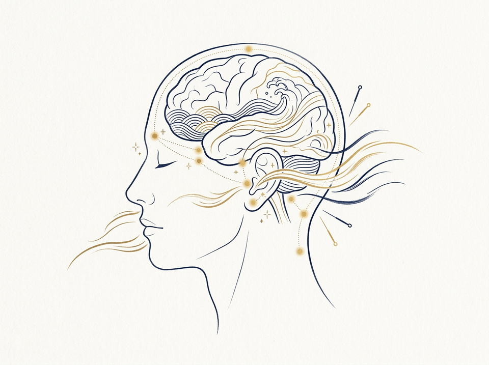

頭鳴り（ずなり）の鍼灸
頭の中で「キーン」「ザー」と音が鳴り続ける状態を、脳の過覚醒（自律神経）と首肩の深層筋から整える施術解説。

このようなお悩みはありませんか？
- ✓頭の中や頭頂部で「キーン」「シャー」「ジー」という音が鳴り続けている
- ✓・静かな場所や寝る前に音が気になり眠れない
- ✓・MRIやCT、耳鼻科で「異常なし・様子見」と言われた
- ✓・抗てんかん薬や抗不安薬を飲んでも変化を感じにくい
原因・メカニズム
頭鳴りは耳の病気ではなく、脳の側頭葉（聴覚野）が過剰に興奮し続ける「脳の過覚醒（交感神経の長期興奮）」や、神経伝達のグルタミンサイクルの変調などが関係していると考えられています。首・肩の深層筋の強い緊張や長期間のストレス・睡眠不足が引き金になるケースが多く見られます。
当院の施術アプローチ
1. 首・肩（僧帽筋など）の深層筋の緊張を緩め、脳への過剰な刺激・緊張の連鎖を断つ
2. 醒脳開竅法や自律神経調整の鍼灸で交感神経の過覚醒を鎮め、副交感神経への切り替えを促す
3. 音の変動期〜安定期を見極めながら施術間隔を調整し、脳の神経可塑性による安定化を目指す（※強いマッサージや首のストレッチは悪化要因になるため控えていただきます）
よくある質問（FAQ）
Q. 何回くらいで変化が出ますか？
首の緊張は3〜6回で変化が出ることが多く、音の安定化には症状の性質に応じて間隔を空けながら調整します。
Q. 病院で異常なしと言われましたが相談できますか？
脳の過覚醒は検査数値に出にくいため、同様のお悩みで来院される方が多くいらっしゃいます。
Q. 枕を変えた方が良いですか？
枕そのものより首の深層筋の状態が影響するため、まずは首の緊張を整えることを優先しています。
#頭鳴り#ずなり#耳鳴り#脳過敏症候群#脳の興奮#自律神経